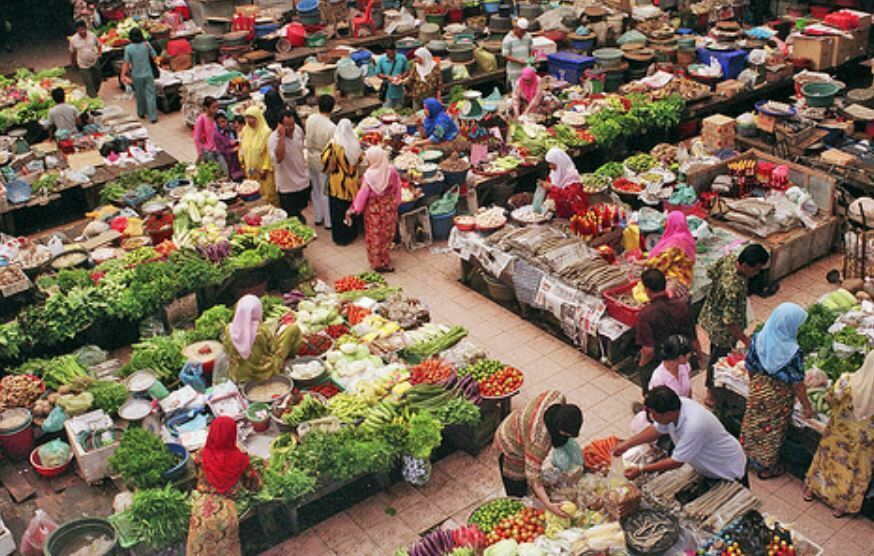
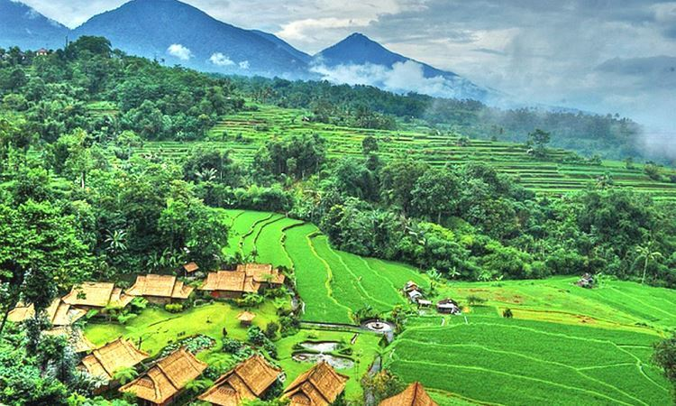

Pengaruh pada Petani
- Kesadaran lingkungan meningkat: Banyak petani mulai memahami dampak negatif pupuk dan pestisida kimia terhadap tanah, air, dan kesehatan.
- Kembali ke metode tradisional: Petani di beberapa daerah (misalnya Bali, Jawa Tengah, dan Yogyakarta) menghidupkan kembali praktik alami seperti penggunaan pupuk kompos, pupuk kandang, dan pestisida nabati.
- Tantangan ekonomi: Produksi organik membutuhkan biaya dan tenaga lebih besar, sehingga tidak semua petani mampu beralih sepenuhnya.

Pengaruh pada Konsumen
- Perubahan pola konsumsi: Masyarakat kota besar mulai mencari produk organik karena dianggap lebih sehat dan aman dari residu kimia.
- Harga lebih tinggi: Produk organik biasanya lebih mahal, sehingga hanya sebagian masyarakat yang rutin mengonsumsinya.
- Meningkatnya kesadaran kesehatan: Konsumen lebih kritis terhadap label pangan dan mulai peduli pada sumber makanan mereka.

Pengaruh pada Lingkungan
- Perbaikan kualitas tanah: Lahan yang rusak akibat penggunaan pupuk kimia mulai dipulihkan dengan sistem organik.
- Pengurangan pencemaran: Berkurangnya penggunaan pestisida kimia membantu menjaga kualitas air dan ekosistem lokal.
- Pelestarian keanekaragaman hayati: Pertanian organik mendorong penggunaan varietas lokal dan menjaga keseimbangan ekosistem.